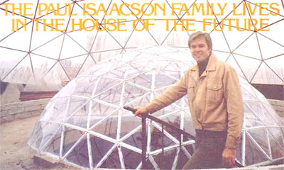
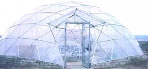
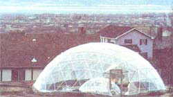
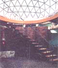
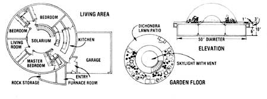
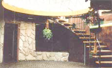
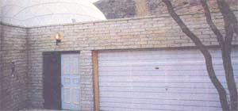
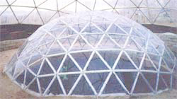
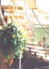
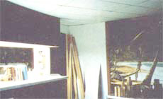

"If you build your house underground-where there's a stable year-round temperature of 55° to 57°F, you're going to save money. Right off, you'll cut your heating and cooling bill by at least 60 to 70 percent. And if you then add a solar heating system to that subterranean dwelling, you'll save even more. Maybe as much as 95, 97, perhaps even 98 percent of an aboveground home's annual heating and air conditioning costs."
Provo, Utah's Paul Isaacson tends to get animated and excited when he talks about underground houses. And for good reason. Paul, his wife, and seven children now live in the kind of spectacular dwelling that Star Wars' troglodytes would have lived in if they'd only been as smart as the Isaacson family.
Yes, the Isaacsons actually live underground. In a house that's topped with two clear plastic geodesic domes, one inside the other. The larger bubble, which measures 36 feet across, serves as both a greenhouse and a "solar energy trap" heat source for the dwelling buried beneath it. The smaller (12-foot-diameter) dome that is inside the bigger bubble is actually the transparent ceiling or roof of a sunken courtyard or "solaratrium". As such it both [1] separates the aboveground greenhouse from the subterranean living space and [2] serves as a la e skylight for that living area.
The solaratrium directly beneath the smaller dome is the hub of the 50-foot-diameter underground dwelling ... and each of the three bedrooms, a living room, the main bath, and the kitchen open into it. Result: Far from being the dark, closed?in spaces you might have thought, all the major rooms in the 2,000-square-foot Isaacson house are brighter and have a more open and airy feeling to them than their counterparts in most "conventional" aboveground buildings.
Paul Isaacson actually set out to construct a far different house from the one he wound up with. He was intrigued by the idea of using solar energy to heat his family's new dwelling during the winter ... but, like most of us, he assumed that the planned home would be a more-or-less conventional above-the-surface stickframe structure.
"The more I looked at the solar homes being built across the country, though, and the more I listened to their architects, engineers, and contractors brag about how they were saving 45 or 50% on heating bills," Paul says, "the more I figured there had to be a better way. And there is. By going underground, we saved?in one fell swoop-more energy than most solar builders can catch with a whole back yard full of flat-plate collectors."
If Isaacson had any doubt that he was on the right track when he decided to put his new residence underground, that doubt was quickly dispelled once the actual construction had begun.
"It didn't take us long to see just how the earth can buffer and smooth out the atmosphere's sometimes harsh temperature swings. There was the time, for instance, when we had the main shell of the house poured with the dirt backfilled over it ... but we didn't have the two domes up yet. This left the solaratrium open to the outside air and it was just a shade above zero outside and snowing at the time. We noticed, though, that as the snow hit the atrium floor-which is 10 feet below the ground's surface-it would melt. So I laid a thermometer down in the puddle of water that was forming, and found that it registered 42°F! Not zero, as it was above the grade ... but 42°. Obviously, we were already getting a nice gift from the earth."
The completed Isaacson house receives that same gift on a daily basis. When it's zero outside and nearby conventional dwellings of comparable size are losing 55,000 to 60,000 Btu's per hour ... the subterranean structure is giving up just a miserly 12,000 Btu's per.
But that's only half the story! As good -or, perhaps, even better-is the part about where those Btu's of heat come from in the first place. In the case of the conventional homes, the whole 55,000 or 60,000 Btu's are furnished the expensive way: by the local fuel oil dealer or natural gas or electric utility. In the Isaacsons' case, on the other hand, a large percentage of its small heating needs are already provided by that "big-and free!-utility in the sky": the sun. And eventually, virtually 100% of those needs will come from that same source.
"Right now," Paul points out, "a fair percentage of our home's heating load is provided directly by the sun. It shines through the two domes onto the darkbrown tile-on-concrete floor of the solaratrium. This heats the tiles, the space above them, and-to a certain extent?the rooms that surround the atrium. And it works. Well enough, in fact, that the only supplemental source of heat we now use is a small 41,000-Btu electric mobile home furnace. During the winter it runs about two hours each morning, then shuts down the rest of the time."
Most of us, of course, would be pleased as punch to get by that inexpensively. But not Paul. He's currently planning the installation of an active air-type solar heating system to supplement the passive system already built into his subterranean residence.
"And that shouldn't be very expensive to put in," Isaacson calculates. "The rule of thumb for most solar homes is that you need at least one square foot of collector surface for every two square feet of living space. However-thanks to our dwelling's modest heating demands and the passive solar gains we're already making-we figure we're only going to have to install 200 square feet of collector for our whole 2,000 square feet of space."
The add-on active solar heating system will store the Btu's it captures in 30 tons of rock. Ducts will then lead from the storage bin through the ceiling to all parts of the house. And an "environmental control center" (a small computer wired to heat sensors scattered around the dwelling) will switch a fan on and off and open and close 17 dampers to direct the warmth where it's needed. The control unit will also draw heat from the large greenhouse dome and-on the few occasions when neither the storage bin nor the big bubble has any Btu's to spare-kick on the electric heater as a last resort.
But that, of course, is a rather obvious way to set up the heating system for a house like this. What, perhaps, is not so obvious are a couple of the finer points of the basic structure's design ... points that contribute greatly to both the buildin's comfort and its energy efficiency.
The Isaacson home, for instance, is round. And there's a very definite reason for that, as Paul explains: "There are 23 less running feet of wall in this house than there is in a rectangular one with the same floor space. Less wall means less area for heat to radiate through. Also, recent studies have shown that more heat leaks out of a corner than seeps through any other part of a wall ... and this home's main structure has no corners at all. That adds up to a 'volumetric efficiency' that few dwellings can match and it's a much bigger factor in this building's energy savings than most people realize."
Isaacson used the same kind of logical reasoning when actually fabricating the walls, floor, and roof of his home. The whole structure is one thick slab of concrete after another ... and that mass of concrete is insulated on the outside with three inches of polyurethane foam sheeting. Which, as you know if you've been reading this magazine (see the Andy Davis interview in MOTHER NO. 46 and the David Wright interview in MOTHER NO. 47), turns the house into one big, massive "thermal flywheel".
Or, to put it another way: By constructing his residence in this manner?underground, with massive concrete walls that are well insulated on their outside surfaces?the house "wants" to maintain its interior at a constant comfortable temperature ... no matter how hot the atmosphere above it gets in the summer or how cold that air becomes during the winter. This tendency is most noticeable on freak days when the thermometer suddenly climbs or plunges 40, 50, or 60* in the course of a few hours: The more violent the change, the more you become aware that a house built like the Isaacsons' couldn't care less. Just like the gigantic thermal flywheel that it is, it serenely coasts right through those temperature peaks and valleys ... while thermometers placed in its interior hardly register any difference at all.
Everything in this world, as we all know, has its price. You don't get something for nothing. And, usually, the more of anything good you get ... the more of something else good you have to give up to get it. Which means that the Isaacson house -which is about as energy efficient as a home can be-must have been very difficult to construct ... or is awfully hard to ventilate ... or was incredibly expensive to build.
Not at all. While Paul is quick to tell anyone who asks that his new residence came complete with its own minor problems and idiosyncracies?and, yes, a price tag just like any other house-his family is still way ahead on the deal.
Take the home's original construction, for example. When you build underground, you have to give a certain amount of thought to picking out materials that won't deteriorate under constant contact with the soil. You also must choose materials that can carry the weight of all the dirt and rocks you intend to pile up on a subterranean building's roof. And, of course, you've gotta make sure your structure is well drained and waterproofed.
Now?obviously?it'll be a good long time (like forever) before the massive, solid, rebar-reinforced slabs of concrete that Isaacson used for his dwelling's walls, floor, and roof "deteriorate" from contact with the soil that surrounds them. And it'll be just as long before the concrete buckles under the load of dirt and rocks piled on it. Furthermore, thanks to the drain tiles permanently installed in all the footings of the Isaacson house and the generous coating of asphalt that was applied to the dwelling's outer surfaces before it was covered with earth, it's doubtful that leaks will ever be a problem in the house.
OK, then what about ventilation? You can't just throw a couple of windows open for a breath of fresh air when you live eight or ten feet beneath your lawn. No, you can't. And, in the case of the Isaacson house, you don't have to.
Any time they feel like it (once that active solar heating system is completely installed), Paul's family will be able to mix as much fresh outside air as they want into the air-either hot or cool-that circulates through the ducts in each room's ceiling. If they ever need to, that is. As things now stand, the atmosphere in the house is reoxygenated (far better than the air in most conventional homes) by passing through the greenhouse on top before entering the building (pretty classy, huh?).
And if you're worried about feeling "closed in" in a subterranean dwelling ... well, the Isaacsons have that one whipped too. Somehow they've worked the magic of designing their house for maximum privacy (no one can see in from the outside) at minimum expense (their home has no drapes or curtains) ... while still favorin' themselves with an unbelievable view (even from deep within the master bedroom, Paul and his wife can see part of the majestic Wasatch Mountain range). As a matter of fact, the Isaacson house-with Its central solaratrium and "extra" skylight In the kitchen?is a great deal less "cavelike" and "closed in' than almost any conventional home you've ever visited.
Which brings us to price. Surely a residence with all the plus features just mentioned must have cost a bundle. Well, it cost enough . . . but no more than any other house with the same square footage and roughly comparable appointments. Paul figures that their new dwelling set the Isaacsons back about $31 a square foot ($62,000 total). So while he's certainly not ahead of the game In that area, he's not behind either.
All in all, then, we'll have to agree that there still ain't no free lunch. But if you spend your money wisely and well (as the Isaacsons have done), you can certainly feast at a multi-course banquet for the same price that most other people spend on a hotdog and a bowl of soup.
Speaking of money, it's interesting that the Isaacsons were able to finance their "weird" underground house with an ordinary VA-backed mortgage company loan. Which Is an important enough breakthrough to mention here in greater detail.
When Paul first visited the mortgage company (which obviously didn't want to have anything to do with any crazy subterranean homes), he was told that the firm could finance his project only if the Veterans Administration approved the design. (And, since the VA is hardly noted for progressive thinking in any area of its activities, it's certain that the mortgage company's officials figured that that was the last they'd ever hear of Mr. Isaacson.)
But Paul had dealt with the VA before and he knew what the agency would and wouldn't look for on a set of house plans. And, being at least one level of intelligence above any of the bureaucrats he had to deal with, he purposely sent his drawings In to the VA with several necessary bits of Information missing.
And, just as he had anticipated, the VA quickly bounced the prints back with a letter listing a dozen or so specific things that Paul had left out.
That was just what Isaacson had been waiting for. Before the bureaucrats knew what was happening Paul had finished his plans, bundled them up with the original letter of rejection , and hand carried the whole package back into the VA office. "Here's your letter," he said, "and, as you can see, I've made all the additions you wanted. What else do I need for approval?" That made it a matter of ego?the bureaucrats couldn't very well come up with any new objections and save face-and Isaacson's house plans were quickly approved.
Needless to say, now that Paul's underground house has worked out so well, it'll be a lot easier for the next guy who wants to construct a subterranean dwelling to obtain the necessary funds ... easier in that VA region anyway.
Although Paul Isaacson's new house is good In all the ways that a house can be good, Paul sheepishly admits that he worked a lot harder than he should've constructing the place.
"I spent too much time reinventing the wheel," Isaacson says. "I didn't know that Malcolm Wells, Thomas Blight, J. Swayze, Andy Davis, David Wright, or anybody else was already experimenting with subterranean structures when I began. I could have saved a lot of time and trouble if I'd only contacted one of those fellows and paid him to advise me as I went along.
"In fact, just to show you how I did everything the hard way, I even figured out all the measurements on my geodesic domes from scratch, bought the materials, cut all the components, and assembled the bubbles myself. Everything fit perfectly, but I had no idea how lucky I'd been until later ... when I began hearing about all the domes that others have constructed which didn't go together so well. Believe it or not, I didn't even know that Bucky Fuller existed or that I could've bought prefabbed geodesic domes until we'd finished."
It's nice of Paul Isaacson to admit his ignorance ... especially since you won't have to. Because Paul-who, after all, now knows most of the mistakes that anyone can make while building an underground house and who just happens to be a professional engineering draftsman?now stands ready to design and draw up prints for a subterranean house that'll fit almost anyone's taste, site, and pocketbook.
Be advised in advance, though, that Paul makes his living as a consultant, there's a lot of work involved in a project of this nature, and the price of working blueprints for a custom designed underground dwelling will probably start at $250 and run up (way up). Remember, too, that Paul has already spent a lot of time and money and personal energy pioneering a new form of housing ... and his fees are actually quite reasonable when you compare them to the thousands?perhaps tens of thousands!-of dollars that his advice can save you.
With all that In mind, and if you think you'd like to have Mr. Isaacson advise you or draft you a set of underground house plans, you can reach him with a letter sent to Mr. Paul Isaacson, 4115 North Foothill Drive, Provo, Utah 84601. And do slip a buck or two Into that letter to cover the cost of his reply.
EDITOR'S NOTE: If you like the house you see with this article, you'll be pleased to learn that MOTHER has made some special arrangements with Mr. Isaacson. Working drawings of the home (suitable for presentation to the VA, mortgage institutions, zoning boards, etc.) are available from Mother's House Plans, P.O. Box A, East Flat Rock, North Carolina 28726. A single set of the plans is $75, and four sets are $90. A complete materials list is also available, when ordered with the drawings, for an additional $10, Orders will be sent first class.
|
 A modernistic dome-within-a-dome |
 ...has sprouted in Provo,Utah. |
 View up through unfinished domes...and drawings of house and domes. |
|
 Solaratrium of house |
 View of house from lower side |
 ...and unfinished dome within dome |
|
 |
 |
 |
|
 |
|
|